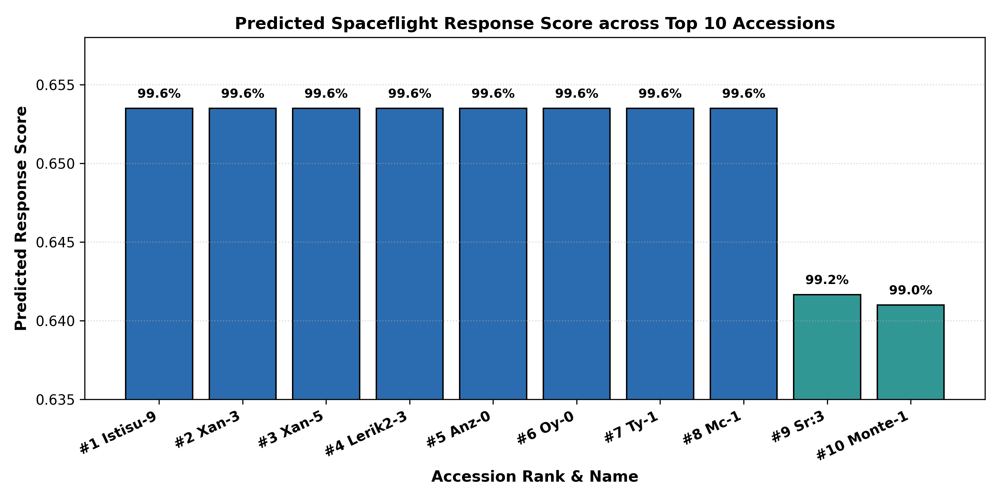
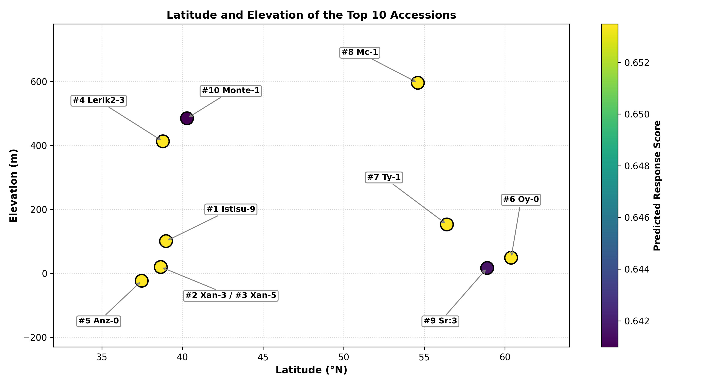

Figure 28: Geographic Origins of the Top 10 Prioritized Accessions
Origins of the top 10 accessions on a Natural Earth 50 m political map, labelled with rank, name, country, ABRC stock number and predicted score (red: Italy/Balkan/Caucasus group; blue: Admixed group). Coordinates are from the 1001 Genomes accession list (tables/top10_predicted_ecotypes.csv). This is panel B of an earlier two-panel figure; panel A, a synthetic terrain illustration, was removed.

Interactive Map
Locations of the top 10 accessions across Europe and western Eurasia. Click a marker to show the accession’s details below.
Predicted Response Score & SNP Burden

Latitudinal & Altitudinal Distribution

Ecotype Spotlight Explorer
Select an accession from the dropdown or click a point on the map to show its location, elevation, flowering time and stock details. Flowering times are the 1001 Genomes FT10/FT16 values in AraPheno (phenotypes 261 and 262); habitat, ionome and morphology descriptions shown here earlier had no source and have been removed.
#1 Istisu-9 (AZE)
1001 Genomes ID: 9099 • ABRC Stock ID: CS76953
📍 Coordinates: 38.9786°N, 48.5594°E • 101 m
🧬 Chr4 alt. hom. SNPs: 29 / 29
🌸 Flowering time (AraPheno): FT10 100.25 d